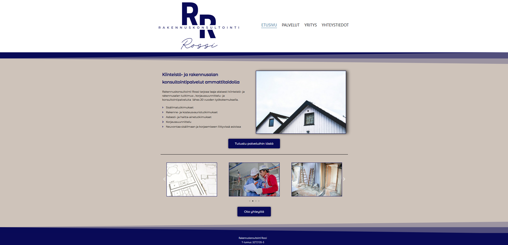
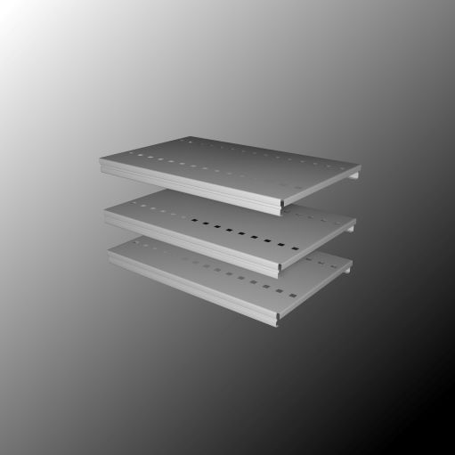
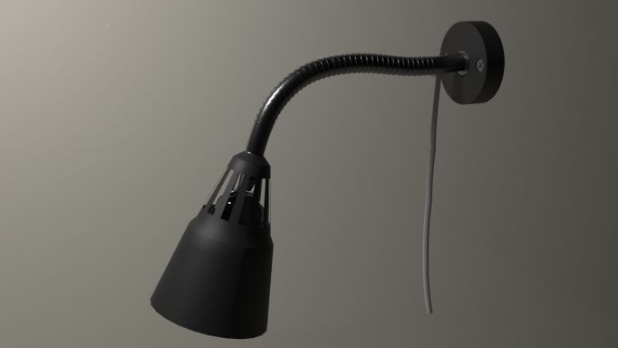
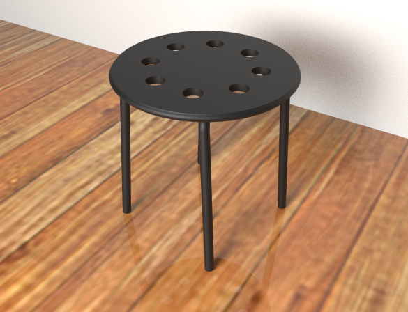

Websivu rakennusalan yritykselle. Rakennettu Wordpress (wordpress.org) Elementor sivunrakenninta ja valmisteemaa hyödyntäen. Yksityiskohtia hiottu pieniltä osin koodilla. Sivustoa ei ole vielä virallisesti julkaistu, koska sivustolle lopullisesti tulevat kuvat tulee vielä vaihtumaan.
3D-mallinnuksia Autodesk 3ds Max -ohjelmalla
Hylly
Ikea lamppu "Kvart" https://www.ikea.com/gb/en/p/kvart-work-lamp-black-00152461
Ikea-tuoli "Marius" https://www.ikea.com/fi/fi/p/marius-jakkara-musta-10135659
Mapbox-palvelun ja Mapbox-GL-JS -karttakirjaston avulla toteutettu suunnistuskisamaaston esittely 3D-karttana ja tavallisena karttana. 3D-kartta muodostuu tässä toteutuksessa Mapboxin /OpenStreetMapin tarjoamasta rasterimuotoisesta DEM-kuvasta. Maaston muotojen korostamiseksi korkeuseroja on hieman liioiteltu karttakirjaston avulla. Maastokarttanäkymään käytettiin Mapbox karttakirjaston "outdoors-v-11" -tyyliä. Kilpailumaaston rajat digitoitiin paperiselta kartalta arvioimalla silmämääräisesti alueen rajat ja siirtämällä ne geojson.io - palvelun kartalle. Palvelu muodosti rajojen koordinaateista geojson -tiedoston, joka tallennettiin paikallisesti. Geojson-tiedoston avulla kartalle lisättiin tasoina kilpailumaaston reunat viivana, sekä reunojen sisälle jäävä alue omana tasonaan.
Toteutukseen tästäHarjoittelua paikkatietoaineistoiden ja paikkatietojärjestelmän käyttämisestä kouluprojektissa. Projektissa tarkasteltiin vuoden 2019 tilastoinnin mukaisten Suomessa tapahtuneiden hirvionnettomuuksien paikkojen suhdetta hirvivaara-alueisiin ja liikennemääriin. QGIS-paikkatieto-ohjelmistolla toteutettiin aineistosta digitaalinen kartta, jonka kautta voi tarkastella hirvionnettomuuksia edellä mainittujen ominaisuuksien mukaisesti. Tämä toteutettiin osana isompaa kouluprojektia ryhmätyönä, tämän osan projektista toteutin kokonaan itse videoeditointia lukuun ottamatta.
Esittelyvideo soudusta ja soutuseurasta Lappeenrannan Soutajille. Tehty DaVinci Resolve videonmuokkaussovelluksella.